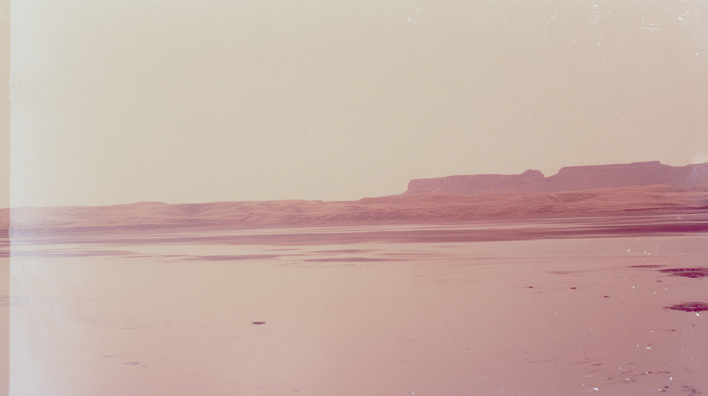
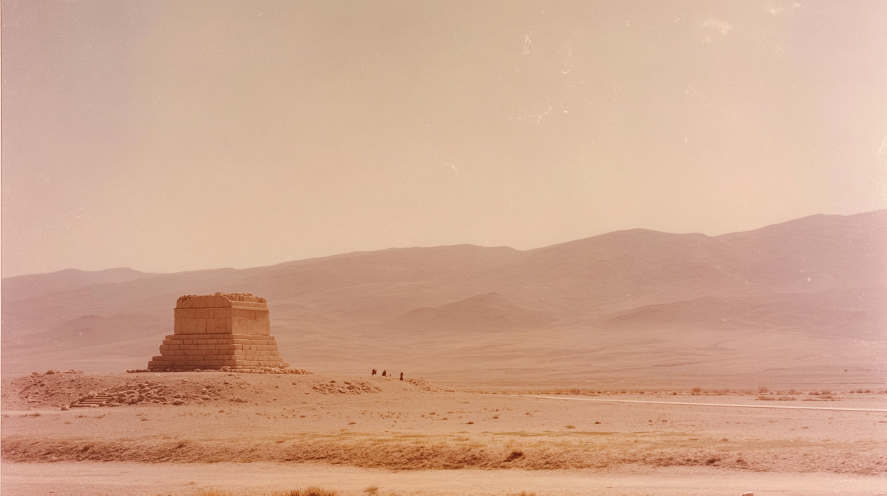
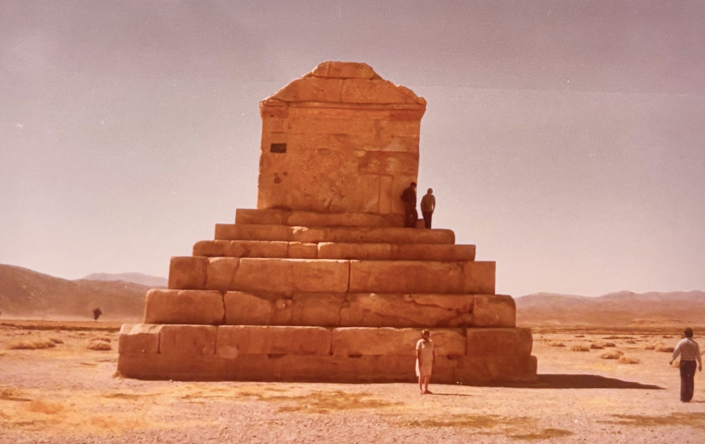

A vast, hazy desert plain stretches toward distant mountains, washed in soft pink and golden tones beneath a faded sky.
A solitary stone monument rises from a low mound in the middle of an expansive desert, tiny figures gathered nearby against rolling hills.
The stepped tomb sits isolated in a warm, dust-filled landscape, its geometric form contrasting with the soft, layered mountains behind.
tomb of Cyrus in the distance sat on dessert flat surrounded by distant hills barely visible through haze, faded analog photograph, sun-bleached colors, subtle dusty pink and muted ochre tones, soft film grain, overexposed sky swallowing detail, heat shimmer distortion, empty space dominating frame, edges dissolving into white
subtle light leaks, imperfect composition, 35mm kodachrome, muted natural colors, low contrast grading, soft highlights, hazy atmosphere, arid heat. warm sky, soft warm reflections on wet sand. Light film grain, organic texture, low digital sharpness, no vivid colors. Shot like contemporary cinema, realistic, alive, subtle faded blurry shutter motion